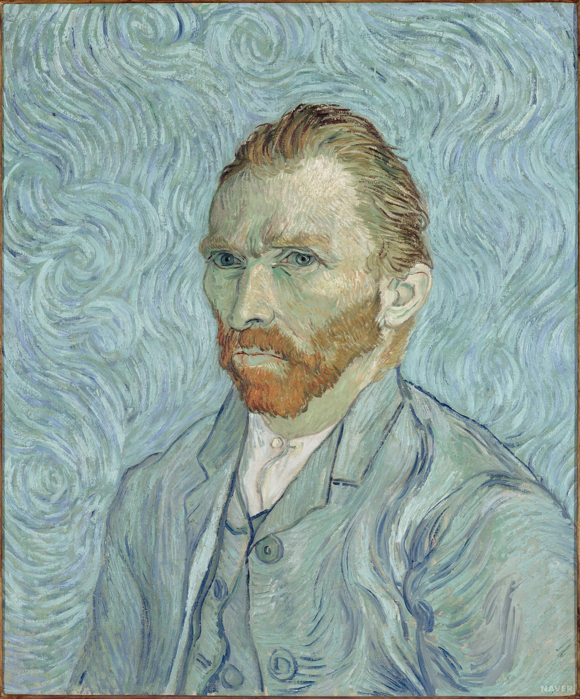

네덜란드의 화가. 27세에 그림을 그리기 시작했으며 주로 남프랑스에서 작품
활동을 했다.
초기에는 하층민의 생활과 풍경을 어두운 색조로 그리다가 자신만의 색의
대조, 강렬한 붓 터치와 색감을 완성했다. 당대에는 인정받지 못했지만 죽은
뒤 야수파, 초기 추상화, 표현주의에 큰 영향을 끼쳤다.

이름
빈센트 반 고흐 (Vincent van Gogh)
출생
1853년 3월 30일 네덜란드 준데르트
사망
1890년 7월 29일 (37세)
프랑스 오베르쉬르우아즈
국적
네덜란드
주요 작품
감자 먹는 사람들, 밤의 카페 테라스, Madame Roulin Rocking the
Cradle (La Berceuse), 별이 빛나는 밤, 아를의 침실, 해바라기,
귀를 자르고 나서 그린 자화상, 마차와 기차가 있는 풍경
고흐의 불꽃같은 열망과 고독한 내면의 기록
1999년 6월에 출간되어 지금까지 20만 부가 넘게 판매되었던 『반
고흐, 영혼의 편지』. 이 책은 태양의 화가 반 고흐의 편지들을
묶은 것으로 동생 테오, 어머니, 동료인 고갱, 베르나르, 라파르
등에게 띄운 편지 들을 수록했다.
반 고흐 빌리지展
컨버전스 아트 '반 고흐 빌리지展'은 명화와 IT기술의 유합을 통해
빈센트 반 고흐가 작품활동을 했던 약 10년 동안의 삶과 작품을
미디어아트로 선보인다. ‘활짝 핀 아몬드나무’, ‘까마귀가 나는
밀밭’, ‘해바라기’, ‘별이 빛나는 밤’ 등 약 350여점의 작품을
5m의 거대한 스크린과 70여대의 프로젝터, Full HD영상을 통해
감상할 수 있다.
"바람과 온도, 달과 별의 하모니 모든 시름을 잊을 만큽
아름다운 오베르의 밤"
뮤지컬 <빈센트 반 고흐> 5주년! 관객과 언론의 쏟아지는 찬사!
5년 동안 큰 사람을 받아온 뮤지컬 <빈센트 반 고흐> 2019년,
당신의 겨울을 빛으로 물들일 단 하나의 뮤지컬! 전 세계가 사랑한
화가, 빈센트 반 고흐의 그림 속으로 뛰어들다!
{kind=link}
{kind=link}
{kind=link}
{kind=link}
{kind=link}
{kind=link}